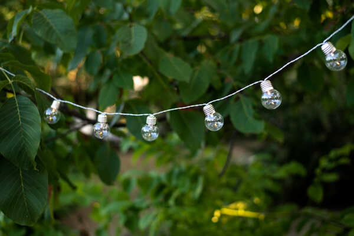

Sobre Nosotros
Quiénes somos
Somos un equipo apasionado de jardineros y amantes de las plantas que han unido fuerzas para convertir tu espacio exterior en un oasis de belleza y serenidad. Con años de experiencia en el arte de la jardinería, hemos cultivado no solo flores y arbustos, sino también relaciones duraderas con nuestros clientes.
Ubicación
Nuestra zona de trabajo principal es la Zona Norte de Buenos Aires. Estamos comprometidos en llevar la magia de la naturaleza a los hogares y espacios de estos alrededores, abarcando localidades como Vicente López, San Isidro, Tigre y más.
Objetivos
Nuestra misión es llevar la magia de la naturaleza a tu hogar, proporcionando servicios de diseño, mantenimiento y asesoramiento que transformarán tu jardín en un lugar excepcional.
Servicios
Mantenimiento de jardines

Nuestro servicio de mantenimiento de jardines se trata de conservar y realzar la belleza que has cultivado con amor. Nuestro equipo de expertos jardineros se encargará de cada detalle, desde la poda adecuada hasta el riego y la alimentación de las plantas, así como la detección y el tratamiento temprano de posibles plagas y enfermedades. Ver más...
Mantenimiento de piletas
Este servicio está diseñado para brindarte tranquilidad y asegurarte que tu pileta esté lista para usar en cualquier momento. Nuestros especialistas se encargarán de la eliminación de hojas, escombros y suciedad de la superficie, paredes y fondo de la piscina, manteniendo el agua cristalina. Ver más...
Poda de árboles
La poda de árboles es una práctica esencial en el cuidado de tu jardín. No solo mejora la apariencia estética de los árboles, sino que también promueve su salud y seguridad. Nuestro equipo de profesionales comprende la importancia de cada poda, equilibrando la estética con la salud y la longevidad de tus árboles. Ver más...
Instalaciones eléctricas
Reconocemos que la electricidad es el latido vital de tu hogar o negocio, y estamos aquí para asegurarnos de que fluya de manera segura y eficiente en cada rincón. Nuestro equipo de electricistas altamente capacitados comprende la importancia de un sistema eléctrico robusto y bien implementado, que brinde iluminación y energía confiable a lo largo del tiempo. Ver más...